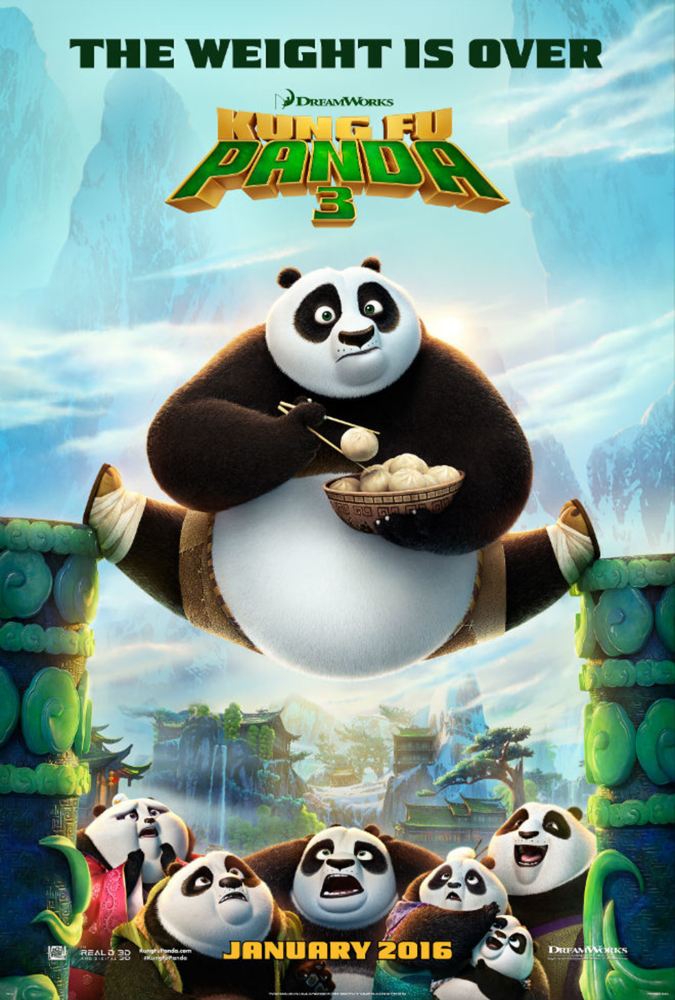
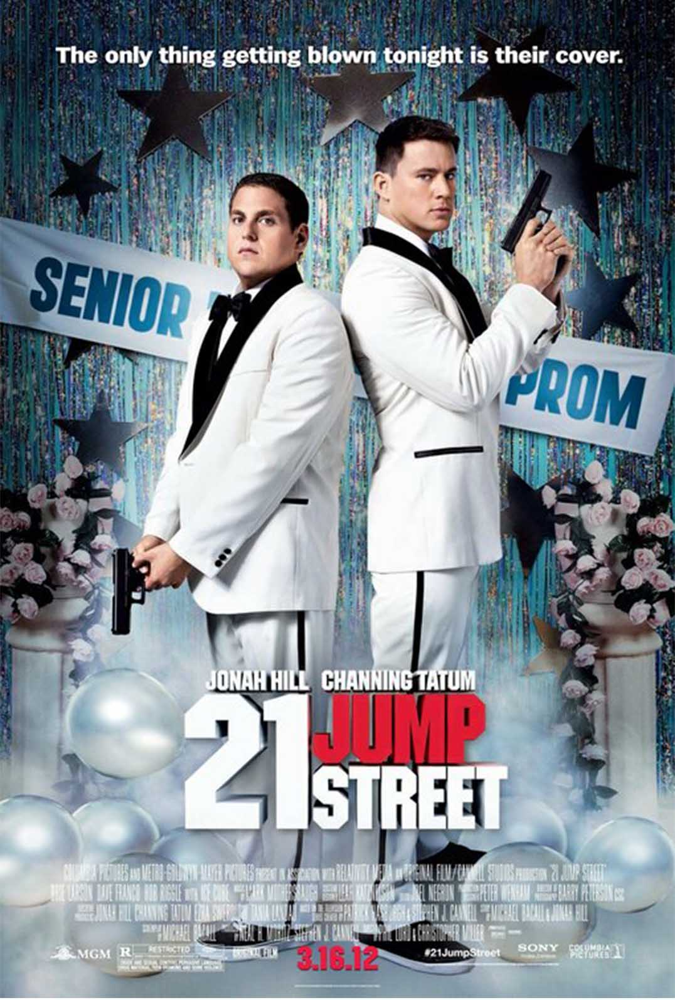

 Kung Fu Panda 3 is een Amerikaans-Chinese animatiefilm uit 2016, geregisseerd door Jennifer Yuh Nelson en Alessandro Carloni. De film is geproduceerd door DreamWorks Animation en Oriental DreamWorks en gedistribueerd door 20th Century Fox. De film is het vervolg op Kung Fu Panda 2 uit de Kung Fu Panda filmreeks.
 21 Jump Street is een Amerikaanse actiekomedie, geregisseerd door Phil Lord en Christopher Miller. De film is gebaseerd op de gelijknamige serie uit de jaren tachtig. 21 Jump Street is tot nu toe genomineerd voor 9 prijzen, waarvan er drie werden gewonnen.